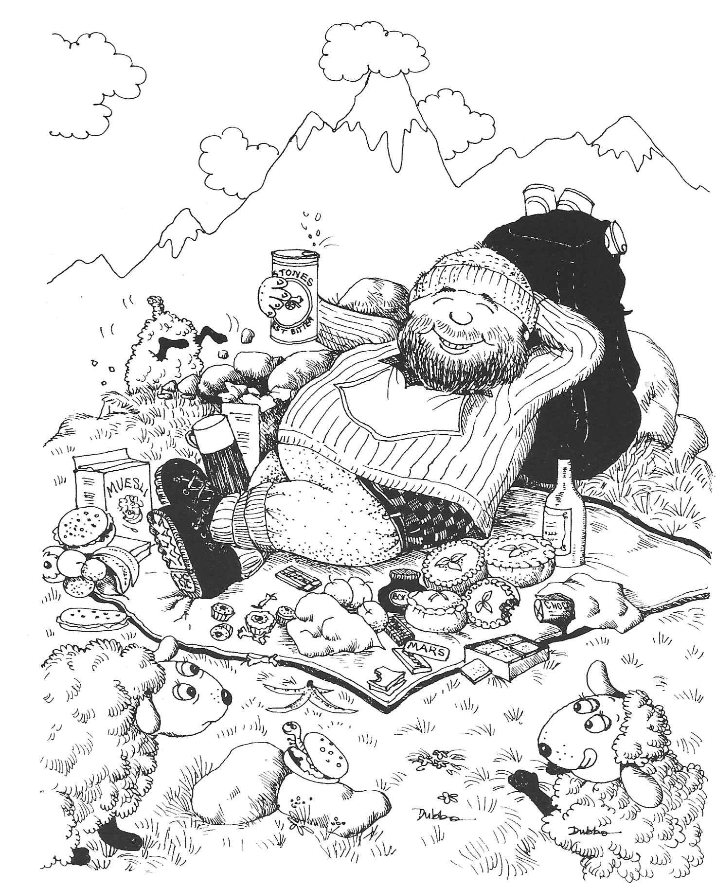

Table of Contents
Some Thoughts on Mountaineering
<p> <em>by Alec Barclay</em> </p>
Why climb mountains? This is a question which has been asked so many times over and is one to which it is difficult to give a satisfactory answer. The question is usually posed in such a way that a dramatic answer is expected but this need not necessarily be the case: mountaineers climb mountains for different reasons and these reasons can change each time an ascent is made. One reason may be the basic primeval urge to pit one’s resources against what nature has to offer, but it might equally well be an escape from one’s normal environment in order to release pent up pressures.
Whatever the reason, mountains are Nature’s answer to these pressures and to involve oneself completely in their presence is an experience from which one returns refreshed and better able spiritually, physically and mentally to face up to life as we experience it.
My own involvement goes back to childhood days when a tree with plenty of branches presented a challenge and small outcrops of rock provided an outlet for youthful zeal. The war years afforded the opportunity to climb abroad in The Lebanon, Australia and New Guinea but since then all my climbing has been in Scotland, The Lake District, North Wales and The Peak District.
The late fifties marked for me a late self proving era when in the company of good friends I spent many weekends on the crags of Glencoe and Ben Nevis, rock climbing in summer and snow and ice climbing in winter. My companions of those happy days went on to to greater things and tragically many are now gone, having died on the very hills they loved so much.
I have remained actively involved in climbing and skiing in my time I have founded two mountaineering clubs, one in Sheffield and the other in Livingston near Edinburgh but no longer do I have the urge to tackle the impossible. However, one must guard against the ever present urge to modify difficulty. Organized society habitually seeks the smoothest way. With mechanization and labour saving devices, life has become so smooth that some of us seek a necessary corrective in grappling with rough undisciplined crags. For me, climbing has always seemed to embody some immutable principle: something stable in a changing world.
Many people look upon mountaineering as a dangerous pastime and believe that its devotees take their lives in their hands whenever they go climbing. But the average mountaineer probably does not incur more danger to life than a man who heartily goes in for any one of half a dozen favourite pastimes. Admittedly, there is an element of danger in serious climbing, but it is, or should be, a calculated risk. In climbing snow or rocks, familiarity does not breed contempt, but it does enable one to see things in their true proportions, to appreciate real dangers and to ignore imaginary ones, and particularly to gauge just what one can achieve personally. Climbing is a test of nerve, skill, endurance and judgement the climber should know his limitations and how far he can risk a move in safety. In proportion to the large numbers of climbers active on the hills, the loss of life by accident is in fact infinitesimal.
“A man is immortal ‘til his work is done” and if he is ready for the call when it comes, he may just as well perish on a mountainside as be bowled over by a car, or succumb to fatty degeneration of the heart.
In Ruskin’s beautiful words:
“Mountains are the great cathedrals of the earth, with their gates of rock, pavements of cloud, choirs of stream and stone, altars of snow and vaults of purple traversed by the continual stars.”

Figure 1: Some Thoughts on Mountaineering